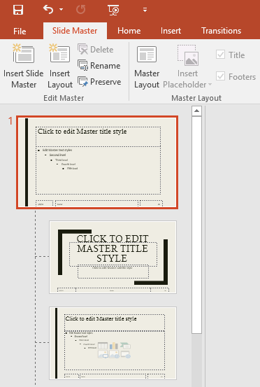
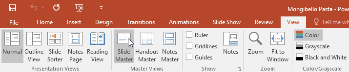
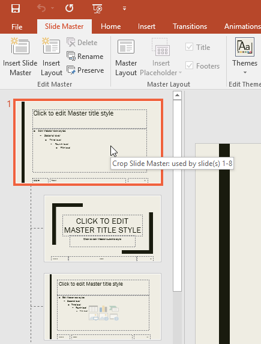
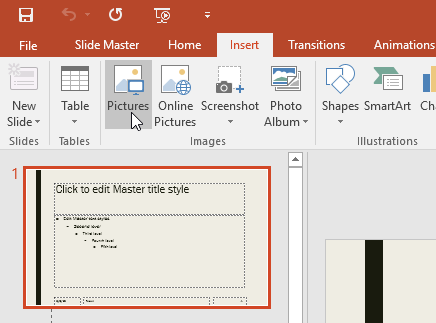
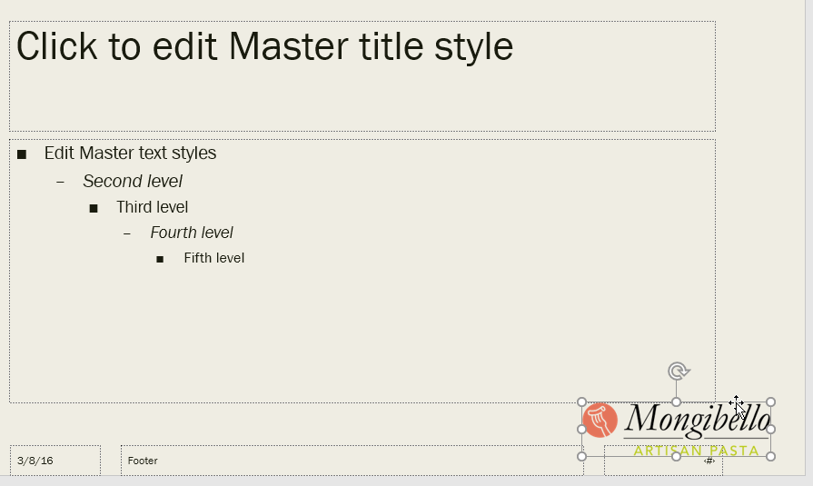
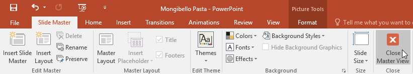
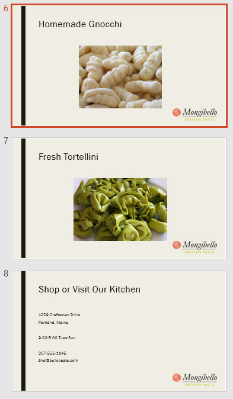

Poate ați observat că atunci când selectați o altă temă în PowerPoint, aceasta rearanjează textul de pe diapozitive și adaugă forme pe fundal. Acest lucru se datorează faptului că fiecare temă are încorporate machete de diapozitive și grafică de fundal. Puteți edita aceste aspecte cu o caracteristică numită vizualizare Slide Master. Odată ce înveți cum să folosești vizualizarea Slide Master, vei putea personaliza întreaga expunere de diapozitive cu doar câteva clicuri.
Ce este vizualizarea Slide Master?Vizualizarea Slide Master este o caracteristică specială în PowerPoint care vă permite să modificați rapid diapozitivele și aspectul diapozitivelor din prezentarea dvs. De aici, puteți edita slide master , care va afecta fiecare diapozitiv din prezentare. De asemenea, puteți modifica aspectul de diapozitive individuale , care va schimba orice diapozitiv care utilizează aceste aspecte.
De exemplu, să presupunem că găsiți o temă care vă place, dar nu vă plac câteva dintre aspectele de diapozitive. Puteți utiliza vizualizarea Slide Master pentru a personaliza machetele astfel încât să arate exact așa cum doriți.

Folosind vizualizarea Slide MasterIndiferent dacă efectuați modificări semnificative la diapozitive sau doar câteva mici ajustări, vizualizarea Slide Master vă poate ajuta să creați o prezentare coerentă, profesională, fără prea mult efort. Puteți folosi vizualizarea Slide Master pentru a schimba aproape orice din prezentarea dvs., dar iată câteva dintre cele mai comune utilizări ale acesteia.
Dacă doriți să modificați ceva în toate diapozitivele prezentării, puteți edita Slide Master. În exemplul nostru, vom adăuga un logo la fiecare diapozitiv. Dacă doriți să lucrați cu exemplul nostru, faceți clic dreapta pe imaginea de mai jos și salvați-o pe computer.





